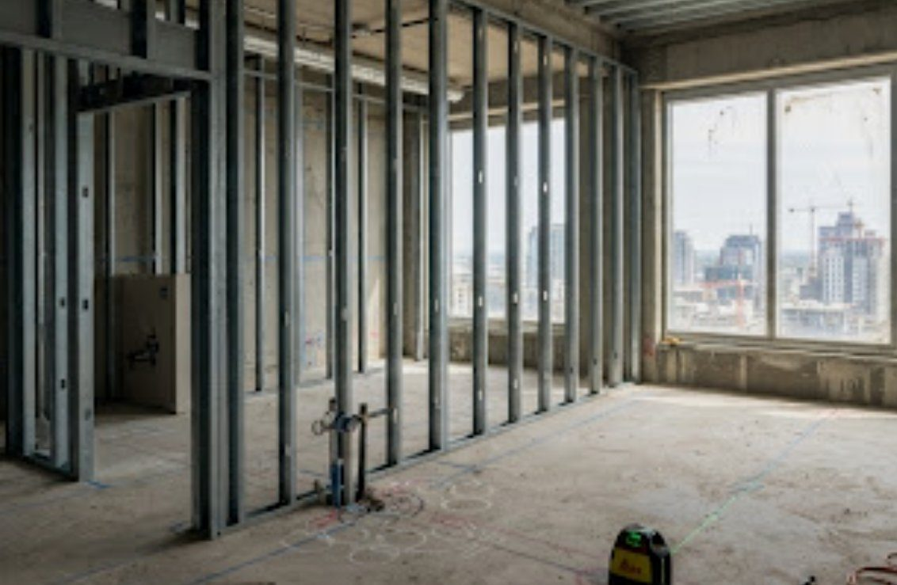

Daily update capture
Capture first — no 3D navigation needed. Location and task, guided photos, a short note, then a clear sync state.
4 boxes expected in this room. Symbol positions are schematic — not exact heights or dimensions.
Location from QR or a list; ambiguous matches ask the worker to confirm instead of guessing.

North wall
Images here are generated samples.
Saved as your claim. Progress changes only after the photos are checked.
North-wall photo missing — you can still submit; it'll come back as a request.
Capture guidance comes from the check definition. A worker's “done” is never enough to complete a task.
States: on this phone → queued → uploading → received → checking → result. Retries keep the same submission ID, so nothing is counted twice.
A local draft never appears as received or checked. Shown on reconnect, app open and a timer — no reliance on background sync.